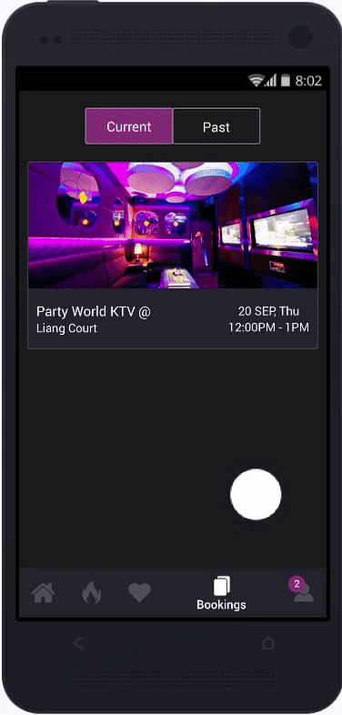

Portfolio
The G6 Project
I am a karaoke enthusiast. I often hang out with my colleagues for karaoke after a long day of work. Although singing is not my forte (unfortunately), I enjoy the process as...
Hi, I'm Leslie.
I'm a final year Computer Science student at the National University of Singapore.
Being a developer and designer myself, I seek to deliver creative and engaging solutions
that tackle real-world business challenges. I have profound knowledge in visual design
and is heavily involved in front-end development and UI/UX roles. I laid my foundations
in ZALORA and small start-ups backed by A*Star. There, I engage with customers to uncover
insights to build an understanding of their problems. My work stresses on the empathetic
understanding of pain points faced by customers to deliver the best user experience.
Intrested in Collaborating?
You can reach me at: lawliet-lawsford@hotmail.com (personal); e0011875@u.nus.edu (school)


Last edited on 26 December 2018 by Leslie Ho Zong Hong.
I am a karaoke enthusiast. I often hang out with my colleagues for karaoke after a long day of work. Although singing is not my forte (unfortunately), I enjoy the process as it helps me to relieve stress and re-energize for the days to come. I would often conceal my terrible vocals by selecting songs that I am confident in singing whenever handed the mic.
However, before I can get to sing, I would need to get past a couple of hurdles which involve the arrangement of time and venue. Depending on my location and knowledge of nearby vicinities, finding a suitable place to sing can sometimes be time-consuming and exhausting. Furthermore, locating one does not guarantee a time slot of my choice. Worst still, I would occasionally get hang up in the middle of a phone inquiry. The issues tend to get worse over the weekend and during peak hour.
Having experienced all these, it is always my intention to devise a solution to improve the booking experience of those who enjoy singing karaoke. I later had an opportunity to conceptualize a product idea in CS3240– Interaction Design, the landmark class on UIUX design hosted by my school, to address the problems as mentioned. During this period, I researched, interviewed, prototyped and tested a digital product concept meant to assist karaoke goers in securing a place to sing.
Before conducting an in-depth study of the problem, I performed a quick sanity check by asking others around me if they too face similar issues. Surprising, only a few had troubles with booking, but most have problems finding a karaoke place nearby.
This is owed to the fact that booking is usually made on the spot rather than in advance. By visiting places that they most frequent, they are confident of making arrangements last-minute based on experience. However, the same cannot be said for places that they are unfamiliar with. When questioned if they are comfortable with other alternatives, a majority responded that they have no preference when comes to finding a place to sing provided that they are situated nearby. What was stopping them was their lack of knowledge about the vicinities that limits their choices. Otherwise, they are prepared to opt for nearby options to save them the trouble of traveling elsewhere (especially in big groups). The Google Maps is what they would count on for suggestions, but the experience can sometimes be unpleasant given the amount of information presented. Some even express discontentment with the images displayed on the app when they do not accurately reflect the actual location.
Other methods were mentioned as well, such as following the lead of others who are more experienced or banking on their chances to discover a new place in their search.
To validate my preliminary findings, more thorough research needs to be conducted. As such, I surveyed both students and adults to find out the current problems that they face when going for karaoke. Then, with the focus on actual experience, I conducted several semi-structured interviews and contextual inquiries to gather more insights into their pains and needs. By adopting a user-centric approach to user research, I can ensure that production is lean, focusing on features that only matters to the users.
The research is structured as follows:
The purpose of conducting a survey is to examine the different contexts a person would visit a karaoke place. Questions include the number of guests, choice of venue, timing as well as navigation methods. You can find the complete set of survey question here. Surveyees were also asked on the type of problems encountered and possible suggestions to improve the situation. Such questions were open-ended to collect qualitative feedback that were based on experience rather than perception. By designing the survey in this manner, respondents can better recall relevant experience followed by specific events that left a deep impression on them.
The survey was disseminated online through personal contacts and social media (basically channel that are known to be cheap and quick) with the following demographics kept in mind.

Of those whom I approached, 50 of them responded with the faction comprising of both working adults and university undergraduates. Below is a breakdown of the result gathered from each question.


From the survey findings, I found out that:
At the end of the survey, I invited three respondents to an interview to share their experiences based on their survey responses. The aim is to explore in-depth their lives, habits and the difficulties they faced.
The interviews conducted with the said participants are designed to be semi-structured. These are one-to-one interviews guided by prepared questions but remained open to being framed by their responses during the interview. As such, questions are likely to change and be adjusted in the process to ensure that problems encountered by users emerge from the users themselves.
The following sums up the interviewees' encounters, what they want and why.
The participants proceed to demonstrate their points through a contextual inquiry exercise, in which they would carry out several tasks as a group. I went to tag along and observe, taking down important pieces of information along the way.
By borrowing subjects of the same demographic from my interview, I am able to relate to their experience first-hand with the goal of building a deeper level of empathy of their problems. Should I be in doubt, I would raise questions directed towards their thoughts and feelings on-set. However, I needed to ensure that the process is non-intrusive to avoid any Hawthorne Effect where subjects knowingly performed due to my presence.
The task is specified as follows:
I gathered a few friends to put together a short video to demonstrate the problems that were observed during the contextual inquiry. I figured out that the best way to do this is to emulate a similar scenario infused with some comical element.
The process was further mapped to a user journey map where I would break down and analyze each step in greater details. A user journey map is useful in highlighting the touchpoints a user has with the current method of securing a karaoke place from start to finish. It describes how a user thinks and feel in every scenario of the journey, revealing more insights into their mental models.
To make better use of the feedback gathered from my studies, I consolidated and categorized them into themes denoting a goal or problem into one place. Designers would usually refer to them as affinities where each affinity is captured onto a sticky note which would be moved around and grouped together. The idea here is to draw patterns to help determine the next actionable step.

From the diagram, the responses gathered ultimately ties back to the experience of going for karaoke. In other words, the intended product needs to focus on creating positive experience of going for karaoke by considering the following aspects that matters most to the users:


After acquiring information from different types of users, I can now make use of the newfound learning to create an empathy map to represents the group of users that I will be designing for. The empathy-mapping process is known to help designers distill and synthesize their knowledge of users into one place. It is the collective voices and needs of those that I have interviewed. Doing so establishes a common understanding about the user, ensuring that a product stays in focus with the user’s needs. At the same time, it also enables the discovery of factors that drove the users’ behavior and other unexpected insights.
An empathy map is divided into four plus two quadrants, outlining notes on six different aspects (feelings, sights, actions, influences, problems, and goals), thus producing an overview of the person’s experience.

Using the empathy map, it is possible to transfer the information about the user to what is known as personas. By introducing specific traits and personalized experience to personas, I can create fictional characters whom my product would serve.
Each persona includes the basic element of the map areas, as well as additional, specific information about the imagined user.

With the overarching idea of assisting users with securing a place to sing, I embarked on a mobile application concept, titled G6 to address the identified problems in my earlier studies. G6 is named after a song called Like a G6 by Far East Movement due to its punk-ish vibe that took the world by storm back in 2010. The song is quick to rise in popularity, becoming one of the most requested songs to sing-along at clubs, karaoke, and disco bars.
It is the goal of G6 to bring together all aspects of visiting a karaoke place in one place. The idea is to streamline the process of finding and booking a karaoke place without having to rely much on multiple sources and applications – think of it as a one-stop hub for all Karaoke needs. The app is designed based on the following principles derived from the user responses.
i) Display results according to price and distance
Being the primary concern of the users, the app needs to introduce some ways to enable categorization and sortation based on meaningful metrics (i.e., distance and price) to hasten a search. For it to be effective, it needs to work with a sizeable result generated within a certain radius. Other filters such as popularity and amenities are equally important as well.
ii) Deals, promotions and discounts
Due to the overwhelming request for promotional campaigns and the common adoption of such practices, it is decided that G6 should have a dedicated section featuring the latest deals and promotions. With the idea of Kiasuism, often regarded as the fear of losing out to others being so prevalent in Singapore, it is not unusual to see people trying so hard to stay abreast of the latest news and promotions. Comparing prices across options has become part of the purchasing process. Users are quick to dismiss something as ‘expensive’ if they manage to find something cheaper elsewhere.
To accommodate this behavior, it helps to consolidate and flesh out a list of ongoing campaigns which users can take advantage of. However, the terms and conditions of each campaign need to be explicitly stated to avoid disappointment. To take the idea of discount further, the app can also consider using promo codes issued by participating vendors when checking out.
iii) Accurate and up-to-date information
Users generally hate the feeling of not being delivered the experience as promised on the internet. As such, it is important to present information that is salient to the users in a precise and cohesive manner. Factors such as user reviews, photos of the venue and featured amenities are what set the expectation about a place prior to a visit. Therefore, such content needs to be carefully curated and organized in a way that is easily understood without any incongruity. Partnering vendors should also work together with designers to ensure that their information stays up to date especially for dynamic information such as date, time and prices.
iv) Provide direction and location on map
Many have expressed concern with navigation as GPS apps are sometimes confusing and unreliable. However, designing a brand-new way of navigating could introduce a steep learning curve especially when users are already familiar with how apps such as Google Maps or Apple Maps operate. Knowing this, it would be useful to tap on their existing knowledge using geo-location APIs that focuses on information relevant to a location. Users can expect to find the same information like address and directions as they usually would on a navigation app.
v) Ease of Booking and Management
Despite users not having many qualms about booking, it is a necessary feature for the app to stay functional. The process should be kept as simple as possible, asking for only minimum information necessary for booking. As a general rule of the thumb, the process should be kept within five steps to ensure optimal experience.
The paranoid nature of individuals like Gary Wong (User Persona 2) requires the app to contain a record of their booking. This is to provide some form of assurance regarding their purchases. Users may need to occasionally refer back to information like timeslot and price when prompted from time to time. The app should cater to post-booking woes by granting them the ability to manage their booking and performed last-minute action like cancellation. This is also one of Nielson Jakob’s usability heuristic, user control and freedom – which designers need to pay attention to when designing.
To visualize how the core features of G6 would work, I drew a general workflow of each feature on a storyboard using pen and paper. A storyboard is a canvas broken down into a sequence of images arranged in chronological order. It illustrates the steps taken by users to achieve their goals. By breaking down a complex idea into small, procedural steps, designers can envision themselves as users and reveal any flaws in their thinking.
Display results according to price and distance

Deals, promotions and discounts
Accurate and up-to-date information + Provide direction and location on map

Ease of Booking and Management
Feature #1: Sort by Price & Distance
Several ideas came to my head; some were good, some bad and, some downright convoluted. I eventually narrowed down to two of them which I thought were straightforward in finding a place to sing.
The first idea was inspired by ride-hailing apps such as Grab and Uber which adopted a minimalistic approach in searching for nearby targets. It utilizes geo-location APIs to scan the radius around a user’s location for karaoke outlets and displays them on a map. With a map, users can easily gauge how far a place is with reference to their current position. As the amount of information that can be displayed on a map is limited, users will need to select the individual markers to find out more about a place. Such design would appeal well to users like Terrance (User Persona 1) whose sole objective is to find somewhere near to sing. They are likely to pick the nearest location and proceed to make a payment immediately. The process would come off as low-effort to them as their only concern is distance and nothing else. However, for users who consider multiple factors may find it tedious to weigh their choices against components like prices as they will need to switch between markers to gather the information necessary to perform a comparison. Such information is hidden unless specify by the user.
Design 1

The second design is based off a typical hotel-booking app that generate a list of results according to one’s preference. Users can browse through comparative factors like prices, distance, images of karaoke places, etc. when comparing between outlets. Search results can be refined using filters to increase users’ chances of finding their ideal location. Aside from the standard filters like date, time and duration, users can also impose stricter conditions using the advanced options to sort according to different metrics or specify a range for price and distance. Users can also indicate the type of amenities they would like to see in an outlet. This design makes searching more flexible by giving users the freedom to customize their search. The only problem is that, unlike the previous design, users are now required to make more decisions which can be troublesome.
Design 2
The second design is based off a typical hotel-booking app that generate a list of results according to one’s preference. Users can browse through comparative factors like prices, distance, images of karaoke places, etc. when comparing between outlets. Search results can be refined using filters to increase users’ chances of finding their ideal location. Aside from the standard filters like date, time and duration, users can also impose stricter conditions using the advanced options to sort according to different metrics or specify a range for price and distance. Users can also indicate the type of amenities they would like to see in an outlet. This design makes searching more flexible by giving users the freedom to customize their search. The only problem is that, unlike the previous design, users are now required to make more decisions which can be troublesome.
After careful consideration, I decided to pick the second design as I felt that the latter is able to accommodate a wider range of users. Earlier studies suggest that users would take into account other factors like prices (not just distance) when going for karaoke. They would spend some time researching on those factors before deciding where to sing. The second method facilitates this behavior by making sure that such information is visible at a glance to give users an easier time searching. The use of filters plays a part as well by letting users work on their search results. As for the first method, it is more suited for activities that needs to be done quickly such as cab-hailing or placing an order. Reducing the number of steps would generally help to achieve this. However, Karaoke is often regarded as an entertainment done at one’s leisure which means that customers can afford to be picky to make their money spent well-worth.
Feature #2: Deals & Promotions
Like the first feature, two designs were proposed. The only difference is how promotional campaigns are being organized. The first method categorized campaigns by vendors while the other combines all of them. The decisive factor lies in how users would normally go about finding the latest deals and promotions. From the earlier sections, it is suggested that price and distance take precedence over everything else when users are seeking a place to sing. Since most promotions have a direct implication on the cost, users are not too concern about the vendor organizing as long as their campaigns are attractive. Differentiating them would only get in their way of searching as it interferes with their visibility. Hence the second design would be a better fit as it lists down all the ongoing events, allowing users to decide what they want to do with it.
Design 1
Design 2
Feature #3: Information about Outlet
To give users access to all the important information at once, the description screen is designed to contain the following information which users find lacking.
The above segments would help to fill up any knowledge gap about a place to avoid any unexpected issues arising from a booking. They are organized in a way such that those of higher priority would be presented to the users first. As humans are predominately visual creatures, it makes sense to present images of the karaoke place at the beginning so that they can quickly assess its suitability. This is immediately followed by other important information such as pricing, opening hours and timeslots necessary for booking. The remaining components seat in places where they normally would be, in line with the standard hierarchy. For instance, customer reviews are placed at the bottom rather than the top.
Feature #4: Booking & Management
Booking ensures ease of use by reducing the number of steps a user have to take. The diagram below illustrates how a user would generally go about booking a karaoke room. Every stage of the interaction is communicated using call-to-action (CTA) buttons found in strategic places of the screen. CTAs utilizes high contrasting colors to capture users' attention to lead them in the right direction.
When an outlet has been decided, users will indicate the number of hours they wish to book and choose a available time slot from the horizontal slider in Step 3. Payment can be made using any preferred method such as credit cards, PayPal, Google Pay, etc. Once a payment is approved, users will receive a feedback implying a successful transaction along with their booking details (Step 6). Problematics field (e.g., missing or incorrect fields) will be highlighted for users to identify and diagnose any errors before committing an irreversible action; this uses one of Jakob Nielson’s heuristics - help users recognize, diagnose, and recover from errors.
All bookings records (past & present) are stored in the management section for users to keep track of their payment and purchase. Users can check the status of their reservation and whether their payments are approved. Once booking is confirmed, they can refer to that stored information when registering at the reception. For circumstances where a booking needs to be canceled, they can head to the specific reservation to do so at the discretion of the vendors. Having a management section remove the cognitive demand from users to remember every detail of their bookings.
I had the opportunity to consult a UX specialist from ThoughtWorks regarding the design of G6. ThoughtWorks is a global technological consultancy that specializes in software design and delivery established in 1993.
Her comments are as follows.

The feedback gathered suggest that having too many choices can be stressful and difficult to comprehend. As such, the number of filters was reduced to restrict the number of ways users can generate the desired results. Of those removed were distance and price range which adds little value to a search since sorting results in those categories would work the same way as well. The UI is therefore simpler to allow users to spend less time making decisions and more time on maximizing productivity.
Concordant to the principle of Perceptual Grouping, the horizontal slider was replaced with a tabbed table to allow users to indicate their duration and timeslot in the same place. A tabbed table effectively grouped the duration (tab) and time field (content) into a single entity since the latter is dependent on the former. Furthermore, unlike a slider, a tabbed design does not “afford” complicated gesture like swiping but instead uses a conventional tap-to-select approach.
In the book, Information Visualization, Ware (2012) pointed out that humans have short-term memory limitations and often need to reference information connected in one way or another. Switching between information would disrupt a user's cognitive thread needed for storing information in his/her head. In the case of a tabbed table, integrating the duration and time would significantly reducing the cognitive effort needed to maintain this thread while filling up the details.
To bring the idea of clarity a step further, each timeslot is represented by a time range (i.e., HH: mm – HH: mm) instead of a single time (HH: mm) like before. The range correspond to the duration which the timeslot falls under. Users can also find more timeslots using the pagination element which takes the form of a button. Buttons are generally a stronger visual cue compared to slider bars.
To determine how the new design fare against the old one, a simple A/B test was conducted to measure the time taken for users to perform the same booking on each design. It was discovered that, on average, the new design took 14.30s to complete while the other took about 15.01s. The improved version was significantly faster by 1 min 11 seconds. When questioned about the discrepancy, many claims that the new design is more apparent in conveying the same information; it gives them a better idea of the check-in and checkout timings. They also felt that the improved layout is more condense given that there are now fewer input fields.
The process of filling up a form in itself is time-consuming, having to go back and correct them makes the experience worst. Instead of communicating errors to users, it is better to prevent users from making them in the first place. To achieve this, the status of each field is now represented by either a cross or a tick. These indicators suggest if a field is correctly filled to allow users to rectify any errors before moving onto the next one. By filling in every detail and reviewing them at the same time, users can ensure that their inputs are free from errors. Submissions that fail to meet all the checks will not be allowed to proceed (i.e., the payment button is disabled) until all the requirements are met for obvious security reasons.

To come up with a suitable color scheme for the prototype, I use an online color scheme generator known as Coolors.co The tool made use of deep learning to generate color schemes based on online photographs, movie, and popular art. A typical color scheme comprises of five colors. As having too many colors would create inconsistency, I decided to narrow down to only three colors instead - Tuna Grey, Bouquet Purple and Shamrock Green. The colors were classified as primary, secondary and accent used in the ratio of 60%, 30% and 10% to bring balance into the composition. In the process of doing so, I also need to ensure that I have at least one contrasting pair of colors (i.e., colors at the opposite end of the wheel) to provide sufficient visibility for the users.
Being limited to only three colors makes it challenging to differentiate between the elements. One solution is to introduce different shades of the same color by adjusting their hue, saturation, and value.
The result: a simple yet diverse style guide as shown below.
The following is a prototype made using Invision, feel free to explore the app yourself
Last edited on 25 October 2018 by Leslie Ho Zong Hong. This article is also published on Medium.
I've been involved in Orbital for almost four years now. For those who are unaware of what this program entails, you can find more information about it through this link. What kept me going back as an advisor, instructor or TA is the opportunity given to share my knowledge as a UIUX designer. One thing that I’ve noticed with most students is that they tend to face the problem of decision fatigue. They spend too much time debating on which design fares better rather than working on the actual prototype itself.
Given the many guidelines on the internet, it can be difficult to decide which design principles to adhere to, as sticking to all of them is impossible. The post seeks to address this problem. I have specifically chosen five UIUX guidelines to talk about in this post. I find them to be highly practical as I follow them 90% of the time when designing for a product that needs to be quickly delivered.
Before I begin, I would like to regurgitate that UI IS NOT UX and vice versa - I often lumped these two terms together, but do take note that they have very different meaning as mentioned in this article.
When comes to designing an interface, be sure to use a consistent set of colors. Recall that Jakob Nielsen once spoke about consistency and standards when designing. You do not want to confuse your users with too many colors. As a rule of thumb, try to sticks to three colors, i.e., primary, secondary and accent. Designers usually do not have much trouble with this; they tend to fret over color proportion instead. There is an old interior design rule that can be extended to modern application design that many are familiar with. It suggests that you pick three different colors and use them in the ratio of 60%, 30% and 10% to bring balance into the composition.

The rule can be interpreted as follows:
Here’s an example of how this rule works:
Pretty neat huh? However, be careful with your choice of colors. Make sure you have at least one pair of contrasting colors to provide sufficient visibility for your users. Also, ensure that your colors harmonize well with each other. The easiest way to do this is to use a color scheme generator – One of my favorite tools to do this is coolors.co.
Designers tend to neglect the fact that font sizes can be as equally powerful as colors in representing information. As the number of colors is confined to the 30-60-10 rule, you may need to resort to using font size to differentiate between elements. Like colors, each font size corresponds to a different degree of emphasis. I like to work with five categories of font size: extra-small, small, medium, large and extra-large. Each font size is calculated by adding an offset to an exponential number of a fixed base. The offset gives you a default size to work with while the exponent gives you a consistent scaling from one size to another. The following is a set of font sizes used by one of my prototypes, calculated using the formula (12 + 2^n).

*Note that your size may vary based on the resolution of the screen you are designing for.
Here’s couple of benefits of using a standard set of font sizes:
The same concept can be applied to spacing and sizing your element as an alternative to a n-pt grid system. However, make sure that you use even number like 10 to size and space your element to accmodate a wide variety of devices.

If you can choose only one technique to illustrate your user flow, my suggestion is to go with a storyboard. A storyboard is a combination of every method that attempts to demonstrate how a product achieves a user’s goal. It is defined as a “story communicated through a sequence of images that chronologically maps the story’s main events.” It is more powerful in conveying an idea than just words as pictures are known to speak a thousand word. The true beauty of a storyboard lies in its ability to break down a complex idea into smaller steps - allowing designers to explore the user experience more in-depth. By narrating a user story through a series of pictures, designers can predict how a user would interact with the interface in many instances, revealing any flaws and misassumption in-between.

Before attempting to draw a storyboard, it is important to first define your user goals followed by your product features – otherwise your storyboard will easily lose focus. A good storyboard maps back to the user’s objective. One way to do this is start off by visualizing the first and last step followed by the intermediate steps required to accomplish a task. That way, you are doing yourself a favour by setting up the conditions necessary to think in the right direction.
Last but not least, only include details that matter in your drawing – the purpose of a storyboard is to visualize your user journey and by no means, an assessment to your drawing ability.
The fastest way to test your prototype without incurring excessive cost is to use a third-party application. My colleague had recently introduced me to this online tool known as Maze. It allows designers to perform user testing online. Yes, you heard it right: online. How it works is that it imports your mock-up from sites such as Invision and Marvel to create specific user tasks that can be shared with others via a public link. The first task is free of charge, but the subsequent ones require money. But overall, it provides you the analytics needed to assess the performance of your prototype. It even deploys heat map technology to determine the number of clicks in various regions of a screen.

*I am by no means afflicted to the site - just a big fan of it.
However, for someone who seek rigor in user testing, the above method might not be suitable. In that case, you’ll be are better off using statistical test to evaluate your prototype. You can check out my other post which talks about how you compare interfaces using the theory of HCI.
Nothing beats getting things done quicker than ensuring that everyone is on the same page. Although this advice is not as technical as the others, I cannot emphasize this enough due to the number of misunderstandings that could arise from misusing terminologies.
Different people have a different interpretation of the same technical term depending on their background. It can be challenging to convey a specific design when working together on the same project. I recalled one instance when working with a client as a freelancer. The person requested for the “thingy that can be slide left and right” on his mobile app. It took me quite some time to realize that he was actually referring to the switch button. Shocking right? Well, I do not blame him as he is not accustomed to using design vocabulary on a day-to-day basis. However, this does not give you an excuse not to educate the people around you. Even if you're unable to meet them on a daily basis, be sure to explain any jargons that people might use at the start of every meeting. Miscommunication is probably the last thing you want to experience when faced with a tight deadline. Imagine discovering that your design is completely off from what others envisioned when significant progress is already made – not only does it cost you time but it also undermines your ability as a designer.
Here are some glossaries which I find to be helpful:
As this is an extension to the first two tips, I decided to add this as a bonus tip instead. So, what happens when you run out of colors and font sizes to differentiate your components? Don’t forget a color comprises of hue, saturation, and value; modifying these values will allow you to obtain different variation of the same color. However, color variations are hierarchal and commonly used to represent a different state of the same element. Human cognition is designed to group similars color and associate them with a particular meaning. When applying a color variation to a component, make sure that it has some form of connection to other components that uses a different color variation as well.
So how do we modify a color to get good variations? As a general guideline, decreasing a color’s brightness and increasing its saturation will increase its intensity while doing the opposite will lighten the intensity. Erik D.Kennedy had wrote a splendid article on how to go about doing this.
Combining this with tip #1, you can quickly do up a style guide like this:
If you were to follow all the above tips meticulously, you can expect to achieve something like this:

Probably not the best prototype, but definitely good enough to impress your stakeholders given the short amount of time.
The tips that I’ve shared are what works for me; you may find some of them useful and others to be irrelevant. It is up to you as a designer to make sense of what is best for your product. However, I must stress the importance of working with a set of guidelines as it enforces some consistency over your designs.
Last edited on 22 October 2018 by Leslie Ho Zong Hong
I was rummaging through my college notes to see if there was anything worth keeping while cleaning up my room. I stumbled across a few sketches (see pictures below) of what seemed like a bicycle lock. I was soon reminded of the amount of time, effort, blood, sweat and tears that went into this project. It was actually part of a college coursework (known as “Project Work”) that I had taken in the past. Those studied in a local college should be familiar with the subject, and yes, I agree with you - it was a nightmare. The project is usually done in a group of five with several topics to choose from. As far as I can recall, we selected the topic “Risk” only to risk ourselves. As this was my first ever design-related project, I thought it will be cool to revisit it after acquiring some knowledge of UIUX in recent years.

The topic that we are dealing with is "Risk." It was a rather broad topic, and my group felt that we needed to zoom-in on an everyday challenge faced by society. A couple of ideas were brought on the table, but none of them were as prominent as bicycle theft. With a myriad of bicycle theft and illegal dismantling occurring in public areas, cyclists risk having their bicycle stolen or vandalized. The issue demanded societal attention and is a suitable area to address. To find out how severe the problem is, preliminary research was carried out with the intention to devise a solution to help address it.
Bicycle is a simple mode of transportation, with a long history that dates back to the 19th century. Despite the rise in popularity of cars and buses over the years, many still rely on bicycles to commute to work, especially in rural areas. Automobile, on the other hand, is often regarded as a luxury good which not everyone can afford. People would resort to bicycle as a cheaper alternative. The high usage of bicycles has however led to related theft in society.
“As recently as 1965, world production of cars and bikes was essentially the same, with each at nearly 20 million, but as of 2003 bike production had climbed to over 100 million per year compared with 42 million cars. Bicycle production was 105 million units globally in 2004, a 1.5% increase over 2003.” (WorldWatch Institute).
A study by the Singapore Police Force in 2009 revealed an astonishing 1 074 cases of bicycle theft - an increase of 59.1% as compared to 675 cases back in 2008. The number includes examples of bicycles dismantled where certain parts of the vehicle were detached and sold for profit. The actual figure might even be higher as not everyone would report such incidents. The number is expected to rise with the emergence of bicycle sharing service where bicycles are made available to the public for shared use.
Don’t believe me? Take a look at yourself.

The emergence of bicycle sharing services has resulted in vandalism becoming more widespread.

“The theft of bicycle is a world-wide problem that nobody is able to solve. There are two types of theft: casual use and professional sale. The casual use theft involves a bicycle left unlocked (hence generally a low-value bicycle) that is ridden somewhere not too far away then, immediately or later, abandoned. … Professional theft for sale is different. The thief possesses special equipment for defeating the typical lock, even the high-security lock, and attacks bicycle which he sells at a profit.” (John Forester. Bicycle Transportation, 1997)
The following research methodologies were adopted to ascertain the need to reduce the risk of bicycle theft and dismantling of bicycles.
An online poll was conducted to understand the public view on this matter. The following results were attained from 62 respondents.


Based on the survey result, more than half of the respondents own a bicycle despite tough competition from alternate means of transport. 47% of the respondents have personally experience bicycle theft or had witness one beforehand, suggesting a notable problem in the society. The problem appears to be more severe amongst those who had experienced it as not many bothered to make a police report. When questioned why many claims that it is difficult to seek external help in retrieving their vehicle; the reason being is that their vehicles would be disfigured beyond recognition by the time investigation begins.
When evaluating their security practices, more than half claimed to have secure their vehicle with some form of security measure with the most common one being cable lock as it is relatively cheaper compared to other methods. Despite this, 70% of the surveyees still express insecurity in leaving their bicycles unattended. It indirectly suggested that the existing practices were incapable of providing cyclists the confidence they seek when securing their vehicle.
The above findings affirm our preconceived notion that bicycle theft is prominent and deserving of our attention to finding a solution to tackle it.
There are several devices and technologies out there in the market to deter against bicycle theft and illegal dismantlers. The more popular ones were consolidated to perform an in-depth analysis of what they could or could not offer.

Observations from the above examples suggest that a critical criterion for a good security device lie in its material; it needs to be sturdy enough to resist tampering. The stronger the material, the better it is at withstanding the impact of hand tools but at the same time, priced at a much higher value. Most of these products are also designed to be attached to a stationary object affixed to the ground for added security.
However, these devices suffer from two common problems – portability and inadequate protection. Sure, a user can always rely on multiple devices for extra security, but at the expense of forking out more money. After all, we have to keep in mind the law of diminishing return where marginal gains from increased purchase decrease with the rising cost.
We will revisit these factors when designing a prototype in the next section.
Our first attempt at prototyping seeks to address two factors mentioned in the previous section: portability and inadequate protection. It needs to be done without compromising on its robustness against tampering.
We hence came up with the following design:
External Structure

Internal Structure

The above design comprises of four main features:
We understand that users prefer to have such devices kept as light as possible so that they can carry them around easily. We applied Nielson’s heuristics and completely do away with the need for users to take any forms of devices with them wherever they go. Recall Nielson’s Heuristics, H7 which states that a good design should be flexible enough to give users the ability to perform a task at an accelerated performance.This was achieved via Bluetooth technology and the use of automation.
The idea was inspired by an application called Proximity that leverages on the default Bluetooth technology in computers to keep them secure. Our prototype can perform the same by tapping on the power of Bluetooth technology from a third-party device, that is, the user’s cell phone. In other words, the key to locking and unlocking a bicycle is the users’ cell phone that are normally kept by their side. By pairing both devices, a specific set of instructions can be issued to the prototype via a designated application. For this to work, the prototype first needs to be attached to the back of the bicycle near the seat tube - an area which poses the least hindrance to a cyclist. Once that is done, pressing a button on the cell phone is akin to locking and unlocking a vehicle, dismissing the need for any physical interaction. For instance, switching to a lock state would send a signal to the prototype to automatically clamp shut the rear wheel of the vehicle. The same logic applies to unlock as well. The prototype is left permanent on the vehicle throughout the entire course of securing it.
The technology not only saves users the hassle of carrying the prototype device but also spare them from the headache of misplacing a key should there be one. Additionally, any future extension of commands is done through the app without additional cost incurred. In the event where a bicycle got stolen, its whereabouts can be tracked using the same application which utilizes the GPS functionality on the phone. This is possible since the device and the user’s cell phone are always connected.
However, one pitfall of this design is the need for users to charge their device occasionally, similar to any other electronics. Charging can either be done via cable or a portable charger.
To provide additional deterrence against theft, the device features a motion sensor that detects any large movement by the bicycle. Should there be one, an inbuilt alarm is raised to sound off the public. It aims to intimidate the offender to cease all activities and flee. If a user still finds it to be inadequate in preventing theft, they are most welcome to use other security devices alongside with the prototype.
We were privileged to be able to consult an expert from Alpera McAuliffe International Pte Ltd, an international organization that specializes in renting bicycles and retail trade for more than 20 years.
He identified several flaws in our design:
We decided to revise our prototype based on the above feedback.
Our second shot at prototyping turns out to be vastly different from its predecessor. The design seeks to address the flaws that were previously overlooked by us.
To tackle the problem of high cost and heavy weight encountered in the previous design, we decided to model it as a shared system which everyone can use. That way, cost for using the service can be kept low as manufacturing cost is shared among users. The pricing is based on the duration of usage so that it is economical and practical for cyclists who do not park their vehicle often. The design is similar to a bicycle rack, but the key difference is that it helps cyclists secure their bicycles without additional equipment. The system comes with ten gantries (or parking lots) and can hold up to ten vehicles. Each gantry is responsible for securing the front wheel of a bicycle. In terms of security, the rack is mounted on the ground, rendering it completely immobile yet sturdy enough to resist any forms of cutting and heating. Ideally, they are to be situated in areas with strict surveillance containing heavy human traffic such as the MRT stations as an added form of deterrence against theft.
The system uses Quick Response (QR) technology and lever handles to toggle between the state of the gantry (i.e., lock and unlock). Users would first need to download an app available on the Google play store or the Apple app store and register a payment method. Users will proceed to scan the QR label on a vacant gantry using the same app (Note that QR label are unique by default). To lock a vehicle, users simply have to lower down the lever affix to the same gantry to slam shut their vehicle.
Unlike its predecessor, there is no need to perform any prior purchase or configuration other than registering on the app itself. Other features such as wheel clamp and automatic sensor still hold but this time, concealed within the rack. Although this design does not come with tracking capabilities featured in the previous model, bicycle owners will nonetheless be alerted of any unauthorized movement of their vehicle through their mobile.
To lock your bicycle:
To unlock your bicycle:
To better illustrate, I drew a storyboard to describe the flow a user has to go through while using T-Lock.
We wanted to go with a design that users are familiar with. Jakob Nielson once spoke about recognition being a far more powerful retrieval process than recall. To avoid users spending time fretting over how to use the system every time, we decided to adopt a mrt-gantry design that appears more intuitive to them.
To aid our visualization, we attempt to model it in 3D.

Due to the “T” Shape design of the transmitter pillar used for communicating with the central headquarter from the above diagram, the system was named T-Lock afterwards for simplicity sake.
We now take a look at some of the important components that constitute the system.
The robustness of the gantries lies in the strength of the solenoid. Unlike physical locks whose strength remain relatively constant and cannot be easily adjusted, a solenoid’s strength varies according to the amount of current that is being passed through. It gives us the flexibility to regulate the its strength from time to time. The use of a solenoid is considered to be smooth and fast with little lag time involved.
I have written a comprehensive document here on how a solenoid works in our system.
An accelerometer will be installed in the locking rod (or clamp) of each gantry. For an object that is installed with an accelerometer, if tilted at an angle greater than what is set, an alarm will be raised. Any unusual movement of the bicycle will let off the alarm, alerting the public of a possible theft. The sound of alarm can further be amplified by drilling holes onto the rod.
As mentioned in the earlier section, the material used to create a device is critical in determining its effective against forcible theft. T-Lock is coated with duplex stainless steel for this purpose. Duplex stainless steel is a mixed microstructure of austenite and ferrite. Being twice as strong as regular, single layered ferritic stainless steel, it offers better toughness and ductility, able to withstand corrosion which leads to future cost saving in maintaining the system.
A central management system is necessary to manage the operations of T-Lock stations across the regions. It seeks to facilitate payment matters such as calculating the amount payable and logistics involving the system hardware. More importantly, it communicates with T-Lock stations using data transmitters to receive notifications on illegal activities. Also, the central authority helps to verify users’ identity to combat any payment fraud.

We conducted several assessments to review the overall performance of the design proposed.
We did another round of evaluation, this time with Mr. Quek Shu Yang, who co-foundered GozoLab, a company that rewards consumers for purchasing from selected vendors. As a software engineer and an entrepreneur for over a decade, he possesses a profound knowledgeable in software architecture and is immensely experienced with the start-up scene in Singapore.
We touched on the topic of land scarcity and how it could interfere with the implementation of our design.
With a total land area of only 719.1 sqkm, Singapore faces the problem of land scarcity. Buildings are often built upwards, and not outwards to reduce land space. Working towards this notion, we improved T-Lock to increase its capacity to hold more vehicles without incurring additional space. This was achieved by introducing a double-sided concept, with ten parking lots on each side. Each lot has an original dimension of 70 x 70 cm. To improve the compactness of the rack, the width of each lot is reduced to about 55cm. This is smaller compared than an average bicycle rack, yet still able to accommodate a good spectrum of bicycle size available in the market.
To bring the idea of space efficiency one step further, we propose the use of a whip antenna – an extendable steel rod to lock the bicycles. Each section of the antenna has a length of 20cm. When extended fully, it measured up to 60cm, effectively covering the 55cm parking lot. When fully retracted it is only 20cm. This effectively reduces the size of the “walls” on each sides the gantry used to house the antennas.
Mr. Quek was also concerned about whether our design is compatible with the surrounding environment. According to him, T-Lock needs to be versatile enough to take on a variety of theme imposed by the location. Ideally, the system is expected to reside in areas that has an abundant of cyclists such as parks or recreational areas. As such, we came up with alternative designs to suit the environment, yet remain eye-catching enough for passers-by to try out our product. However, we need to ensure that its effectiveness against bicycle theft is not compromised by the improvement in appearance.

One of the biggest merits of our system is portability. Contrary to popular belief, a bicycle lock need not always have to be a personal handheld device; we have demonstrated the possibility of remodelling as a stationary shared point to ease usage. There is little value for cyclists to invest in an advanced, cutting-edge technology only to find out that it outweighs the cost of thier bicycles. Our goal here is to provide an economical, user-friendly yet effective method against bicycle theft. Due to effective cost-sharing among consumer, any modification made to T-Lock would benefit everyone. This also means that a bigger budget can be granted to making enhancements like using duplex stainless steel in building the locking mechanism. Other feature such as motion sensor previously thought to be infeasible in our first prototype can now be implemented in T-Lock as they only designed to come in during the course of securing a vehicle.
Another advantage of using the system is the incorporation of online payment services. We understand that the government is pushing for a “cashless society.” To align with this objective, the use of mobile phone to perform payment would enable the support of a wide variety of popular payments means online. Paying in cash can be a very cumbersome process and may require additional instruments to handle the transactions.
WeaknessIt may not be cost-friendly for T-Lock to be implemented in areas that lacks supervision as it could potentially result in vandalism. Vandalism include spray painting and purposeful destruction of the system components resulting in their malfunctioning. Vendors will have to suffer from maintenance cost of vandalized locks and gantries. Additionally, if implemented in desolated areas, the sounding of the motion sensor is less effective and offenders is more likely to get away with theft. Hence it should be implemented in areas with strict supervision to tap on the public surveillance system such as the CCTV and IP camera.
OpportunitiesWhen it comes to seeking sponsorship, there are many cases whereby organizations in Singapore provide funding for similar initiatives. When dug deeper, we found out that our project’s objective coincides with that of Land Transport Authority of Singapore (LTA). One of the agency's key objective is to promote a healthy living in Singapore as evidenced by the number of related projects rolled out over the years. A notable example would be the establishment of cycling towns in Pasir Ris and Tampines which encourages citizens to choose cycling over driving. With that being observed, it is highly plausible for such government entities such as LTA to support projects that seeks to improve the well-being of cyclists in Singapore.
We also took a look at the government’s attitude towards theft. As a non-profit organization, the government body is concerned with the welfare of its citizens. The authorities are looking to inject funds into projects that could potentially reduce the number of theft and vandalism cases in recent years. Therefore, every aspect of T-Lock – from the materials used to the method of implementation – considered the implication of these issues and took a high standard approach to alleviate these problems.
ThreatThe lack of a potential market has always been a challenge to new endeavors. With T-Lock being a new entrant to the bicycle lock market, a substantial amount of time is required for the product to instill some brand loyalty in cyclists and establish an association between a good bicycle lock and T-Lock in customers. It is therefore important to work on its marketing strategies by continually advertising the product on popular bicycle sites such as Dirt Bike and Bike Radar forums so that the public would gain more knowledge about T-Lock and encourage its use.
Moving forward, we can consider adopting various marketing models such as a reward or membership program to make things more appealing for daily travels. Cyclists can expect to enjoy discounts and hourly specials by fulfilling certain conditions specify by the vendors.
The truth is that if a thief is determined to steal a bike, he’s going to do it at all cost. Hence, no single lock is a perfect solution to deter theft. However, having a good lock can make him think twice before committing a theft. Moreover, it is always in the human quest to minimise the risk we encounter. On a final note, T-Lock is not only convenient, durable, and cost effective. It seeks to provide an all-day protection to all bicycles, ensuring that cyclist will never have to fear leaving their bicycles unattended.
Last edited on 3 November 2018 by Leslie Ho Zong Hong.
Have you ever been faced with the dilemma of choosing between prototypes? Are you skeptical with the result of your user testing? Do you find it hard to convince your stakeholders with your design?
If your answer to the above is yes, you have come to the right place. In this post, I will be demonstrating how to conduct a simple Human-computer Interaction (HCI) experiment to compare the performance between two menu interfaces. I will be using R commander to analyze the data gathered from the experiment using inferential statistics (download link).The same tools and technique can be applied to other interfaces as well – but you’ll need at least two interfaces or prototypes to perform a comparison.
By extracting quantitative data from an experiment, information can be represented in graphical forms to reveal any underlying patterns, trends or correlations. They are useful to facilitate a design discussion by providing the necessary figures to support a claim. It is different from the traditional, ethnographic studies that involve user inquiry and observation. A HCI experiment tend to focus more on using empirical methods to investigate the usability of an interface by collecting evidence to prove or disprove a hypothesis.
Before we begin, I will like to caution you that the rest of this post will cover heavy statistical concepts which is not for the faint-hearted.
Still wish to continue despite being warned? If so, here we go…
A typical HCI experiment can be classified as between-subject or within-subject. A between-subject design is an experiment where two or more groups of subjects are each being tested with a different interface. A within-subject design, on the other hand, is where the same subject sees all interfaces, and the differential performances of all subject is averaged and compared.
To help you choose a suitable method for your experiment, I’ve created a simple table that compares between the two designs.
Notice that I have started using terminologies and concept which may sound foreign to some. To aid your understanding, I have highlighted some of them which require explanation. Feel free to skip this if you already know what they mean.
Let us begin with the objective of this experiment. Our purpose here is to investigate the difference in performance between two menu interfaces on laptops: Marking and Radial menu.
As seen from the above, each menu technique presents a different way of selecting a menu item. By gathering suitable data from the participants, we can empirically evaluate the two types of menus and identify any significant difference across and within different Independent Variables (IVs) for each technique. We want to know how they fare in terms of speed, accuracy, and the amount of interaction. To determine each KPI, we will need to propose a suitable dependent variable that can be quantitively measured when performing a menu selection of a given stimulus.
Data on each variable for each trial will need to be stored somewhere else to be analyzed later. For simplicity, we will logged them in an excel sheet generated by a web interface at the end of the experiment. Subjects will be using the same web interface to make selections on the respective menus.
We can expect the value of a dependent variable to vary across and within the different IVs. However, our ultimate goal is to find out whether the effect observed is significant enough to conclude that an IV is indeed responsible for the change in the value of a dependent variable. As such, effects that are not significant will not be discussed here.
It is important to know who you are designing for. A good interface needs to have a clear target audience. Once defined, you can draw a random sample from your target population. Depending on your experiment, you may need to screen participants with certain kind of experience. While restricting your sample, be sure to protect the external validity of your experiment. Also, be mindful of any “extreme subjects” - one that is either over-zealous or lacks interest in your experiment.
In this experiment, we will be targeting GUI users who are familiar with digital menus - with most of their experience expect to come from pre-installed interfaces. According to Digital Influence Lab 2015, it was revealed that 59% of the internet users in Singapore falls between the age of 15 to 34, acknowledging the fact that the internet is accessed on all kinds of digital devices supporting graphical elements.
To gather participants of that age range, students of different education levels were recruited to provide a good representation of the general cohort.
8 participants, three women and five men ranging in age from 18 to 25 years were recruited from the National University of Singapore (NUS) and Nanyang Polytechnic Institution (NYP). Amongst them, five of them were university students while the remaining three were polytechnic students. Due to a shortage of resources, other educational levels were not considered in this experiment.
The following is a list of the participants' profile.

We also had the participants do a simple pre-questionnaire like this.
Based on the result gathered from the survey, we found out that there was an equal number of participants with prior experience in Marking menu and with previous experience in Radial menu. Students found to have prior experience in Marking menu rarely uses it (almost never) while those with experience in Radial menu either uses it rarely or not frequently (less than twice daily).
An interesting discovery is that half of the participants have experience in both menus, with three of them being university students and one being polytechnic student.
To minimize random variables arising from device configuration, experimental settings were controlled and kept constant to improve the internal validity of the experiment results. The experiment was conducted on a laptop running on Windows 10 Home edition equipped with a 15.6-inch full HD screen at a screen resolution of 1920 x 1080. Two types of pointing devices were used as well, namely a laser mouse and a default trackpad that comes with the laptop. Both devices had a cursor speed of five.
The recruitment process ensures that all participants were Window users and had roughly the same experience with menus in general. This is to avoid running into the risk of having inconsistency in our result due to a difference in familiarity with the operating system used in the study.
Each participant was placed in a noise-free environment with only the presence of the experimenter and the subject. Any randomness attributed to environmental factors such as noise and distraction were reduced as a result. The experiment was then performed on an web interface comprising of the following screens, arranged in order of view: Welcome screen, Pre-questionnaire, Interface walkthrough, Practice trials, Experiment, and Post-questionnaire. I have left the code for the interface open-source in case you wish to use it to perform your own testing. Participants were required to go through all six screens during the experiment. A unique participant ID was also issued to each participant to help the experimenter better keep track of the result.
Before commencing the experiment, subjects must give their consent and state their voluntary participation. Once permission is given, a set of similar instructions was issued to the participants to help them understand the purpose of the study. Participants were given time to practice with the different menus to familiarize themselves before taking the actual test. The actual experiment was split into two parts with a 3-minute break in between.
At the end of the experiment, subjects were asked to fill up a post-questionnaire to give their quantitative and qualitative feedback on the tested techniques.
In each trial, participants were required to select the correct menu item indicated on the info panel located on top of the screen. On the same panel, they would refer to the information under the respective Independent Variable (IV) categories to determine the condition of the current trial. Suppose one of the IV is the pointing device required to perform the task, there would be a simulation of the participant knowing which pointing device to use at that instance.

Notice that there is more than 1 IV in the above image; having technique alone is insufficient to evaluate the performance of the menu. We also need to explore other factors as well, such as pointing device, usage scenarios, and menu depth. All these will determine how complicated or difficult a task is which in turn affect the speed, accuracy and the amount of interaction of a menu selection operation. In reality, one can either be familiar or not familiar with the menu in use and the task at hand. For situations where a user is familiar with the operation, menu selection can be easily performed using a suitable pointing device. Otherwise, they will need to perform a trial-and-error until the target item is successfully selected using a pointing device they found appropriate. In the case of the experiment, participants were given different stimuli provided by the info panel to emulate various scenarios.
The experiment was conducted within-subjects. Each subject is tested under all possible conditions (or treatments). There are three fundamental advantages to this design: low recruitment cost, statistical efficiency and minimize error variance subjected to individual differences. Instead of having one participant per condition, the same participant can be used to test all conditions. In terms of statistical efficiency, a within-subjects design makes it easier to detect differences across levels of IVs since each subject’s behavior under one condition is compared from one to another. Differences between individual are also reduced as a result of assigning the same participant to different treatments.
However, a major drawback of this design is the possibility of an ordering effect where earlier conditions determine the performance of later conditions. Participants may become more skilled or worn out with each attempt which either improves or worsens their performance on a later treatment.
To address this, a counter-balancing strategy needs to be introduced for selected IVs. We also need to ensure that every experimental condition occurs the same number of times at each position in the order. There are two main counter-balancing strategies to choose from - full counter-balance and sequential. A full counterbalanced design will exhaust all possible order of IV levels. Each subject will take on a distinct order. For instance, suppose we have 3 levels, A, B and C for a particular IV, you would divide the subjects into 6 group treated as orders ABC, ACB, BAC, BCA, CAB, and CBA. Sequential design, on the other hand, simply means to follow the default arrangement of IV levels, which is to have all subjects treated in the order ABC. Take note that your choice of strategy will depend on the nature of your interface as well as the presence of any symmetrical learning effect. Some interfaces only allow users to perform certain tasks in sequential order while others accept multiple ways of doing so and has no implications on performance. I will elaborate more in the later part of the section.
*There are also other counter-balancing strategies, such as balanced Latin square which were not covered in this post; I encourage you to check them out.
The following table is the strategy used for each IV.
The independent variable Technique (IV1) was fully counter-balanced to address the primary concern of the experiment, that is to find out the difference in performance between the Marking menu and Radial menu. IV2 was also fully counter-balanced to overcome any carryover effect assuming that there is a systematically transfer effect as a result of participants being equally familiar with the use of mouse and trackpad prior to the experiment.
On the other hand, the independent variables of usage scenarios and menu depth remain sequential due to an asymmetrical transfer effect; subjects may develop different levels of proficiency at performing similar tasks due to the complexity and amount of time spent on completing the previous tasks. For instance, a subject who previously performed a dual selection may find single selection to be relatively easier but not the other way around.
The same cannot be said for menu depths whose arrangement is sequential due to the default behavior of both techniques. Subjects would need to work their way up to a higher depth regardless of the number of menu depth involved.
By establishing the above, we can now determine the minimum number of participants required for the experiment.
Minimum no. of participants: 2! (IV1) x 2! (IV2) x 1 (IV3) x 1 (IV4) = 4
To avoid introducing any heavy biases by “extreme” subjects, we recruited 8 participants – multiples of 4 - to provide a better representative of the target population. Subjects were divided into four groups with two people in each group. Members in each group were exposed to all possible conditions but in a different order from members of other groups.
Total number of conditions per participants (regardless of order of treatment): 2 x 2 x 2 x 3 = 24 conditions
To further increase the reliability of the result, each condition comes with 3 trials. Each trial is associated with a specific topic of menu selection: a) Animal b) Food and c) Clothing. Topics or subtopics can either be a sole selection (i.e., single task) or one of the menu selections required from the user (i.e., dual task).
Designating 3 trials per condition, total number of trials per participants = 24 x 3 = 72 trials
Total number of trials across all participants = (4 x 2) participants x 24 conditions x 3 trials each = 576 menu selections in total
We obtained the result using an R statistical tool, known as R commander together with a third-party package ‘ez’ to perform ANOVA (Analysis of Variance) on the collected data. Instruction on how to use these tools can be found here. Given that subjects were exposed to all possible combination of techniques, pointing device, usage scenarios and menu depth, a four-way repeated measures ANOVA was used to compare the mean differences in speed, accuracy and the amount of interaction. ANOVA is a method to determine whether there are any statistically significant differences between the mean of two or more independent variables. As our experiment is within-subject, we will need to perform a repeated measure ANOVA. More information can be found in the decision tree diagram below.
Using R-commander, we can analyse the effect of using different types and levels of IVs on different KPIs. As the approach is the same for speed, accuracy and the amount of interaction, I shall only analyze the speed of the menus; I leave the rest to you as an exercise.
Def: Speed is measured as the time taken to matched the given stimulus regardless of the selection made.
The analysis of variance showed a significant main effect for technique (F1,7) = 25.10, p = 0.00155 < 0.05. As this is insufficient to determine how the different levels of technique differ from each other, a one-way within-subjects ANOVA was conducted to compare the effect of different technique on time taken to complete a selection.
The result is as follows:
The result suggests that on average, Marking menu is faster than Radial menu. A possible explanation is that Marking menu involves a single, continuous mouse movement which reduces the time spend between mouse input and eventually the total time spend on a selection. Radial menu, on the other hand, requires a mouse click at every menu depth, taking a longer time to perform the same task.
Analysis of variance showed a significant main effect for usage scenario F (1,7) = 10.32, p = 0.0148 < 0.05. A one-way within-subjects ANOVA was conducted to compare the effect of different usage scenario on the time taken to complete a selection.
The result is as follows:
The above result suggests that on average, a single selection is faster than dual selection. This is expected as a dual selection requires a more extensive knowledge on the menu options in order to select correctly. Furthermore, a dual selection may introduce similar options where a category may fall under several options. Consequently, subjects may spend more time reading, recalling and deciding on the option that best fulfils all conditions of a dual selection.
Analysis of variance showed a significant main effect for menu depth F (2,14) = 52.61, p = 0.000000308 < 0.001. A one-way within-subjects ANOVA was conducted to compare the effect of menu depth (1, 2 and 3) on time taken to complete a selection.
The result is as follows:
Three paired sample t-test were used to make post hoc comparisons between menu depths with Bonferroni correction for k=3 corrections (α → 0.05/3 = 0.017).
These results suggest that menu depth does have an effect on the selection speed. There is a significant difference in the time taken to complete a menu selection when comparing the use of menu depth 1, 2 and 3. Specifically, our result suggests that subjects spend significantly more time as menu depth increases, i.e., depth 1 < depth 2 < depth 3. This may be due to a raise in unfamiliarity with the categories (or menu items) associated with each depth. As subjects dive deeper into their selection, the list of categories presented become more technical and elaborate compared to the previous. To be able to perform a selection quickly requires prior knowledge and education on these topics.
There was a significant Menu Depth x Technique interaction F (2, 14) = 8.57, p = 0.00371 < 0.005, indicating that a change in menu depth affected the two techniques differently.
To investigate the interaction effect between menu depth and technique, we plot a significant two-way interaction to perform a pairwise means comparison (t-test with 5% alpha-level) on time taken to complete a selection.
The figure above indicates that a Radial menu is significantly slower than a Marking menu in general. For both techniques, the time taken for subjects to select a menu item increases significantly with menu depth. However, the rate of increase in completion time with menu depth differs for both techniques hence indicative of a significant interaction effect between menu depth and technique on speed.
The observation can be possibly explained by the difference in input behavior between the two techniques. A Marking menu involves a smooth, continuous stroking motion to progress from one depth to another. The Radial menu, on the other hand, requires a mouse click at every depth. Mouse activity is kept relatively low for Marking menu regardless of menu depth. However, for Radial menu, a greater menu depth calls for a higher number of mouse action from the user. As a result, more time is spent on mouse activities, extending the time taken to complete a selection.
There was a significant Menu Depth x Pointing Device interaction F (2, 14) = 3.89, p = 0.0454 < 0.005, indicating that changes of menu depth affected the two types of pointing device – mouse and trackpad differently.
To investigate the interaction effect between menu depth and the pointing device used, we plot a significant two-way interaction to perform a pairwise means comparison (t-test with 5% alpha-level) on the time taken to complete a selection.

The figure above indicates that the time taken for subjects to select a menu item increases significantly with menu depth for both pointing devices. However, a trackpad is slower than a mouse at menu depth 1 and is faster at menu depth 2 and 3, hence indicative of a significant interaction effect between menu depth and pointing device on speed.
The reduction in speed at menu depth 1 when using a trackpad may be attributed to the long cursor distance required to perform a selection on a marking menu where a selection involves a continuous stroking motion. However, as subjects progress to a higher depth, their cursor movement are increasingly constraint by the surface area provided by the pointing device. When compared to a mouse, a trackpad offers a smaller surface area for cursor movement and participants are forced to move their cursor over a shorter distance when selecting. With less time spent on cursor travel, the trackpad performs faster than the mouse when selecting at a higher menu depth.
There was a significant Menu Depth x Usage Scenario interaction F (2, 14) = 6.00, p = 0.0131 < 0.005, indicating that a change in menu depth affected the two types of usage scenarios differently.
To investigate the interaction effect between menu depth and usage scenario, we plot a significant two-way interaction to perform a pairwise means comparison (t-test with 5% alpha-level) on time taken to complete a selection.
The figure above indicates that a dual selection is significantly slower than single selection. For both scenarios, the time taken for subjects to select a menu item increases significantly with menu depth. However, the rate of increase in completion time with menu depth differs for both usage scenarios hence indicative of a significant interaction effect between menu depth and usage scenario on speed.
Unlike a single selection, a dual selection may be nested within two higher categories where the technicality of these categories depends on the menu depth. This means that subjects are again expected to have a broader range of knowledge relevant or irrelevant to the selection prior to the experiment. Additionally, as mentioned earlier, a dual selection can introduce similar menu options which adds to the complexity of the task. As such, subjects may find themselves increasingly spending more time in deciding on the option that fulfils all conditions of a dual selection as they progress from one menu depth to another.
What you've seen here is just a tip of the iceberg. A complete analysis goes further than this; it requires more sophisticated concepts to facilitate more rigorous testing. However, the above is sufficient to serve as a rough gauge in assessing a product’s performance.
From the earlier analysis, we observed that a Marking menu is more efficient in terms of speed. Should we perform the same study for both accuracy and the amount of interaction, we can gather more insights to determine which technique is overall better. However, when working on a real-world project, chances are, you will be held back in terms of time and budget. That means you cannot afford the luxury to carry out such an extensive study of your prototype. My recommendation is to focus on KPIs that reflect the performance of your product to save you both the time and money.
In general, experimental research requires clear, testable hypotheses, and a good number of well-controlled variables. It is impossible to control every erroneous factor as resources are limited. If you ever obtained an unexpected result despite having the right setup, you will need to narrow down on the source of error and follow-up with the participants if needed. With the right knowledge and practice, a HCI experiment should be fairly easy to conduct. Should you, at any point in time, find your experiment to be too complex, maybe it’s time to revisit your design and questioned if it makes sense.